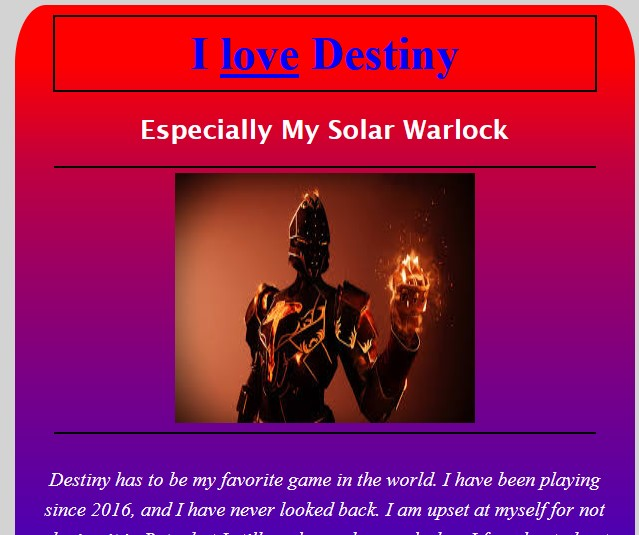
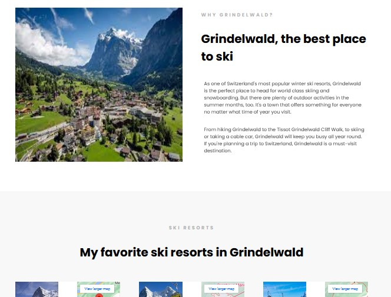
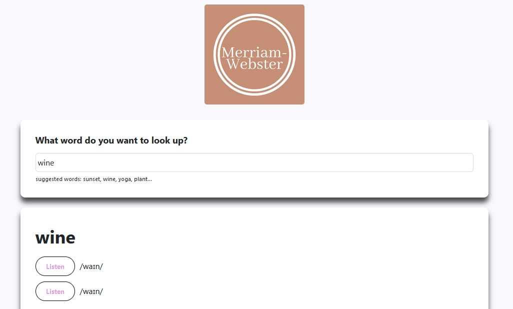

.PROJECTS.
Destiny Landing Page
This was my very first project that I completed in the SheCodes bootcamp. Here I learned basic concepts of HTML and CSS. The project was a simple landing page based on a hobby. I picked one of my favorite video games, and that gave me a topic that I knew a lot about. This was the SheCodes Basic course which taught about HTML elements, and attributes. It also taught about CSS properties, colors, positioning, and many other styles. Once I saw what I could create with a little bit of code, I was eager to learn more.


Travel Project
This was one of my first projects with SheCodes. After the completion of my landing page project, I was eager to jump into my second project. This project was bringing in a new framework: Bootstrap. This project was a travel project, and I was very eager to complete it. This gave me a chance to showcase where I wanted to visit most: Switzerland. This project taught me how bootstap could enhance a webpage, and how to make the page responsive. I also learned how using google locations could create maps, and how to adjust the CSS when viewing on different medias. The code is the same as when I completed it. I wanted to focus on where I started compared to where I am now.
Weather App
This project gave me an in-depth view of JavaScript and the many ways it can transform a webpage. I learned about JS events, APIs, selectors, dates, functions, and forms. I truly enjoyed the outcome of this project and the different coding challenges that it put me through.


React Dictionary App
React has to be one of the most difficult libraries that I have ever had to learn. But, it challenged me to push myself to new limits. It taught me about components, states, events, forms, and loops. What I found most intriguing was how JavaScript turned into JSX. I didn't understand it at first, but once I started applying what I was learning it started to make sense.